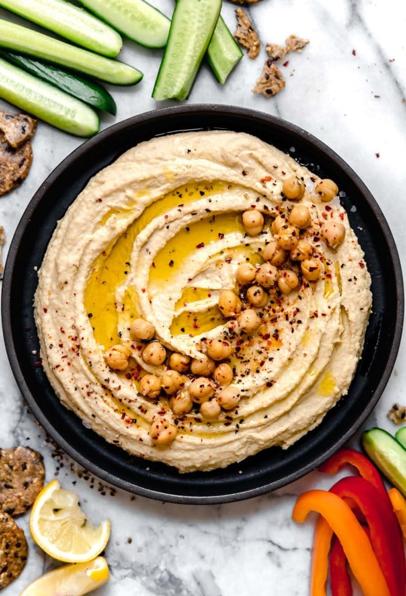

Hummus
Odin Recipes

Description
Hummus is great for veggie dipping and makes for quite a tasty snack! But that's not all it's good for. It's also perfect for spreading on gluten-free crackers, adding a dollop to a salad or spreading on a sandwich or wrap. It is an easy and healthy way to add delicious flavor to food and kids love it, too!
You won't want to miss out on this! Try out this easy and quick hummus recipe. The flavors will fill your home
and nourish your body.
Ingredients:
- 2 tablespoons of olive oil
- 1 can (15.5-ounce) garbanzo beans (also known as chickpeas), drained and rinsed
- 3 garlic clove
- 1/2 lemon, juice of (add more if desired)
- 2 Tbsp. tahini
- 2 Tbsp. water
- 1/4 tsp. sea salt
- black pepper, to taste
Steps:
- In a food processor or blender, combine all the ingredients
- Use a food processor or blender on high until smooth and creamy. Add additional water if needed, the amount will depend on the consistency of the tahini.
- Transfer to a serving bowl. Drizzle with a little oil, cracked black pepper and crushed red pepper flakes if you like a little kick.
- Serve it with veggies, add it to a salad, spread it on a sandwich or however you wish to enjoy it!